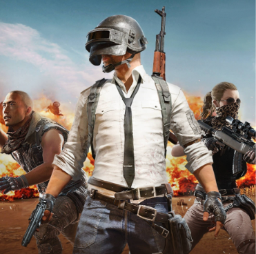

🎮 A história do PUBG A ideia surgiu com Brendan Greene, conhecido online como PlayerUnknown. Ele era fã de filmes e histórias de sobrevivência e começou a criar modificações para jogos como ARMA 2 e ARMA 3. Em 2016, Greene começou a trabalhar com a empresa coreana Bluehole para transformar sua ideia em um jogo completo. O resultado foi PlayerUnknown's Battlegrounds, lançado em acesso antecipado para PC em março de 2017. O conceito era simples: 100 jogadores entram em uma ilha. Todos começam praticamente sem equipamentos. Os jogadores precisam encontrar armas, munição e equipamentos. Uma área segura vai diminuindo progressivamente. O último jogador ou equipe viva vence. O famoso "Winner Winner Chicken Dinner" virou a frase de vitória do jogo. 🌍 O que aconteceu depois? PUBG explodiu em popularidade em 2017. Ele ajudou a transformar o battle royale em um dos maiores gêneros dos videogames, influenciando jogos como Fortnite e Call of Duty: Warzone. O jogo também chegou aos celulares em 2018 com PUBG Mobile, que se tornou um fenômeno gigantesco, especialmente na Ásia. Em 2018, foi lançado também PUBG Mobile, desenvolvido pela Tencent em parceria com a PUBG Corporation. a marcada por conflitos militares e experimentos, enquanto outros mapas apresentam diferentes sociedades, guerras e acontecimentos. 📖 E a história dentro do jogo? A história do universo de PUBG é bem mais misteriosa. O jogo não começou com uma campanha tradicional contando uma história. Aos poucos, os desenvolvedores foram introduzindo lore através dos mapas, trailers, personagens e eventos. A ideia central é que os combates são realizados como uma espécie de jogo mortal transmitido para espectadores, organizado por uma figura misteriosa conhecida como The Battlegrounds e associada ao personagem The Unknown. Os mapas também possuem histórias próprias. Por exemplo, Erangel é uma ilhSe você quiser, posso contar a história completa do universo de PUBG, em ordem cronológica, incluindo quem é o Unknown, a história de Erangel, Sanhok, Vikendi e os personagens principais.